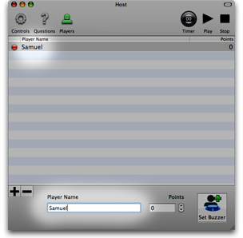
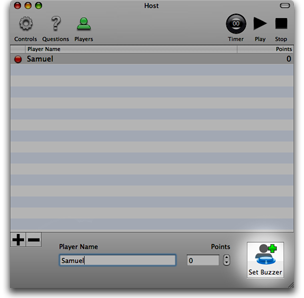
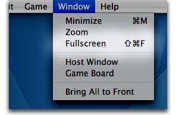
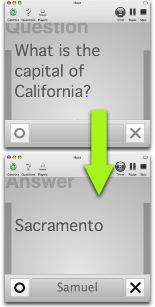
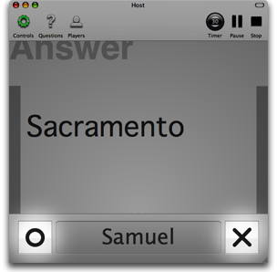
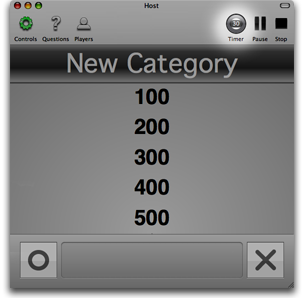

Getting Started
Follow these directions to learn how to quickly set up a game. But, make sure you first read the section on "Recommended Hardware Configurations."
Load or Make Questions
Open a previously created or downloaded trivia file (files with the ".triviaq" extension) by selecting "File->Open" from the menu.
- Or -
Create a new set of your own questions by clicking on the "Questions" button in the host window toolbar. Add new categories (up to five total) by clicking on the plus (+) button.
Click the disclosure triangle next to the category name to show the questions for a category. Select a question to edit the question and answer text in the area to the right.
Point values for questions begin at 100 for the top-most question in a category and increase by 100 for each question after, ending with 500 points for the fifth question in a category.
Save your questions by selecting "File->Save" from the menu.
Add and Configure Players
Click on the "Players" button in the host window toolbar to bring up the player list.
Add as many players as desired by clicking the plus (+) button.
To change a player's name from the default of something like "Player 1," select them in the table and type the new name in the box at the bottom of the window.
Assign a button to each participating player by selecting that player's name and pressing the "Set Buzzer" button.
A window will appear that will ask for the player to press a button. At this time, ask that player to press any button on their controller that they wish to use to buzz in.
After the window dissappears, the light next to that player's name should have changed from red to green. Repeat this for each participating player. If the light is still red please try again or check the Controller Troubleshooting information).
Press Play and Start the Game
When you press "Play," the controls view should be brought up automatically. If not, click the "Controls" button to bring up the controls view in the host window.
Make the game window fullscreen by clicking the "Fullscreen" item in the menu or by pressing command-option-f. Select the screen to fill in the sheet that appears over the game window and press the "Fullscreen" button at the bottom of that sheet.
Click "Play" in the toolbar to begin the game and the list of categories will appear in the center of the window.
Select the value of the question you want to show from the category you want by clicking the point value below the category title.
When a question is clicked, the text of the question will replace the list of categories in both the game window and the "Controls" tab of the host window. While a question is displayed, a player may buzz in using the button they selected on their controller previously. When they buzz in, the text of the answer will replace the text of the question and the name of the player that buzzed in will be shown in the box at the bottom of the window.
At this time, the player will try to give their answer before time runs out (as counted by the bars on the sides of the host game board). If the player manages to give an answer before time runs out, the host will click one of the two buttons on the bottom of the host window. The host will click either the circle button for a correct answer, or the X button for an incorrect answer.
If the player does not answer the question in time or answers incorrectly, the text of the question will return and the other players will be given the chance to buzz in. Players who previously answered the question incorrectly will not be allowed to buzz in to answer the same question again. They will have to wait for a new question.
If you need to pause the game at any time please, click "Pause" in the toolbar. Press "Play" again to resume normal play when you are ready. If a player has buzzed-in and you are waiting for them to give an answer you can pause the game if you choose to give them more time to answer. The timer will resume when you either press the X or Circle buttons or press "Play" again.

This will continue until either there are no more questions left to answer or time runs out for the game (as indicated by the timer in the toolbar).
You can check players' scores at the end of the game by clicking on the "Players" tab in the host window at any time.